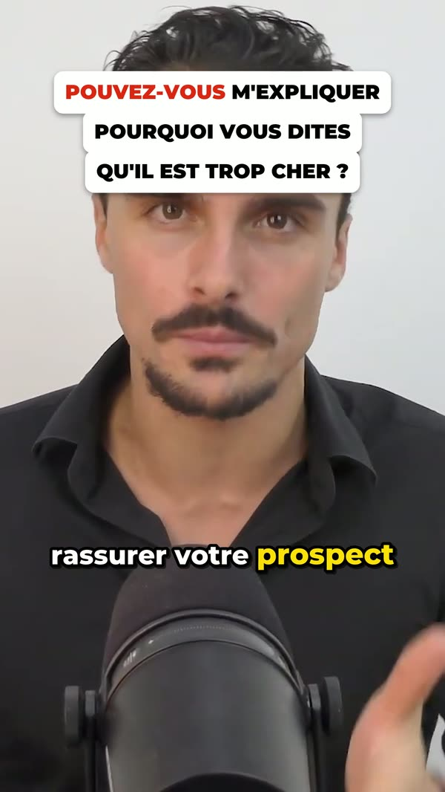
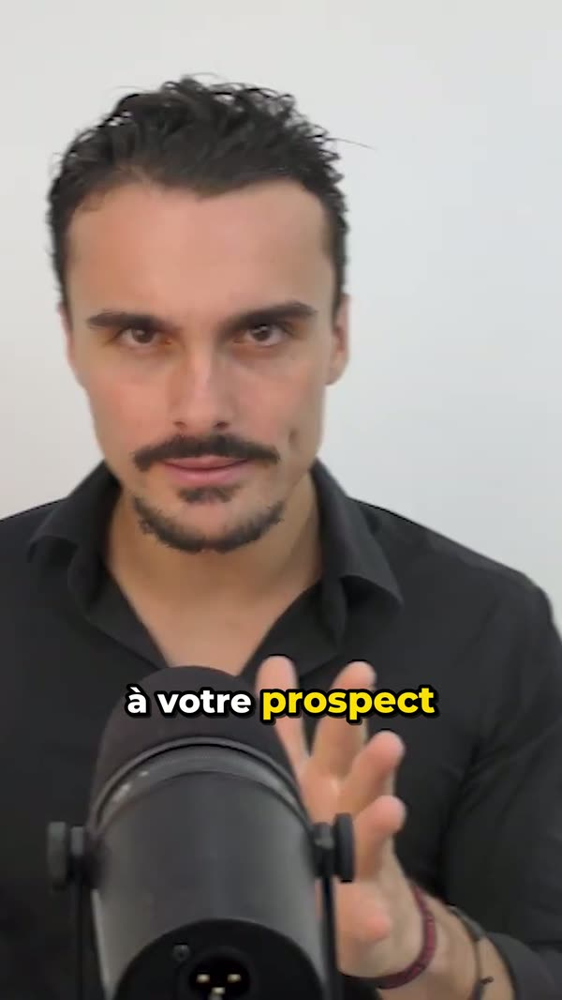

Les rediffusions
Le graphe des passages les plus regardés, publié par YouTube. Le début d'une vidéo est toujours au maximum : Cutlantis ne lit pas la valeur brute mais l'écart à la tendance, pour que seuls les vrais pics ressortent.
YouTube sait déjà quels passages de votre vidéo le public revient regarder. Cutlantis lit cette courbe, écoute la voix, analyse ce qui est dit — puis vous rend des clips verticaux sous-titrés, prêts à publier.
Les campagnes de clipping paient à la vue. À 1 € les 1 000 vues, 89 000 vues de vos clips remboursent Cutlantis au prix de lancement — 199 000 au prix normal. Tout le reste est pour vous.
Les campagnes de clipping paient à la vue. À 1 € les 1 000 vues, 89 000 vues de vos clips remboursent Cutlantis. Tout le reste est pour vous.
Ordre de grandeur, pas une promesse. Les campagnes affichent le plus souvent 1 à 5 $ les 1 000 vues selon la campagne et la plateforme ; les plafonds par clip et les vues refusées réduisent le gain réel. Calcul fait au prix affiché.
Un bon extrait n'est pas seulement un moment fort : c'est un moment qui tient debout tout seul. Ces trois familles de signaux sont combinées puis pondérées, et chaque clip vous dit ce qui l'a fait sortir.
Le graphe des passages les plus regardés, publié par YouTube. Le début d'une vidéo est toujours au maximum : Cutlantis ne lit pas la valeur brute mais l'écart à la tendance, pour que seuls les vrais pics ressortent.
Intensité et dynamique du son, mesurées toutes les 50 millisecondes. L'emphase, le rire et la montée de ton se voient dans la forme d'onde avant de se comprendre dans le texte.
Sur la transcription mot à mot : force de l'accroche, présence d'une chute, chiffres, charge émotionnelle. Et des pénalités — un extrait qui commence par « du coup » ne veut rien dire sorti de son contexte.
Quand un créateur place un produit, beaucoup de spectateurs sautent la séquence — et atterrissent tous au même endroit. Sur la courbe des passages les plus revus, ce point d'atterrissage devient l'un des plus hauts pics de la vidéo. Un outil qui suit la courbe à l'aveugle vous proposera d'en faire un clip.
Cutlantis repère les placements de produit : base collaborative SponsorBlock, chapitres de la vidéo, et lecture de la transcription avec la description — marque citée, code promo, « lien en description ». Il n'en fait jamais un clip, et il gomme de la courbe le faux pic qui suit.
Mesuré sur 52 vidéos sponsorisées de grandes chaînes YouTube françaises, en septembre 2026. Quand SponsorBlock ne connaît pas encore la vidéo, le filtre s'appuie sur la seule transcription : 17 %.
Choisissez les bornes sur la frise — la courbe des passages les plus revus vous guide — ou cliquez une phrase de la transcription. Cutlantis fait le reste, comme pour un clip qu'il aurait proposé :
Sept nouveautés, comprises dans l'achat.
Un clic sur un mot pour le corriger, « remplacer partout » pour un prénom ou une marque. Les mots douteux sont signalés.
Dès qu'une chaîne publie, Cutlantis télécharge, analyse et prépare les clips. Vous publiez le premier.
Silences coupés, zooms sur les moments forts, accroche et teaser en ouverture : ce qui retient sur TikTok.
Rediffusions publiques Twitch et Kick, la plupart des sites vidéo, vos vidéos et vos podcasts audio.
Le cadre suit la personne qui parle, ou l'écran se partage : l'une en haut, l'autre en bas.
Pour chaque clip : texte de publication, crédit de la chaîne et hashtags tirés de ce qui est dit.
Police, couleurs, filigrane et logo, enregistrés en chartes réutilisables.
1080 × 1920, sous-titrés mot à mot, cadrés, titrés, audio calibré au niveau attendu par les plateformes. Ces images sortent de vidéos analysées telles quelles.


La vidéo est téléchargée, transcrite et montée sur votre machine. Aucune vidéo n'est envoyée sur un serveur, il n'y a ni compte à créer ni minutes à acheter.
Certaines vidéos, souvent les plus récentes, n'exposent pas ce graphe. Cutlantis le signale et bascule sur la voix et le texte. La sélection reste bonne, simplement moins guidée par l'audience.
Trois sources : SponsorBlock, une base collaborative où les spectateurs signalent les segments sponsorisés (interrogée anonymement : la vidéo ne quitte pas votre ordinateur) ; les chapitres de la vidéo ; et la transcription, lue avec la description — marque citée, code promo, « lien en description ». Les passages repérés apparaissent hachurés sur la frise.
Oui : Twitch (rediffusions publiques), Kick, la plupart des sites vidéo, et vos propres fichiers, vidéo ou podcast audio. La courbe des passages les plus revus n'existe que sur YouTube : ailleurs, Cutlantis s'appuie sur la voix et le texte, et le mode manuel reste là.
La transcription gère la plupart des langues courantes et détecte celle de la vidéo, japonais et chinois compris. Les règles d'accroche sont aujourd'hui affinées pour le français et l'anglais.
Sur cinq minutes de vidéo : une vingtaine de secondes de téléchargement, une minute de transcription, puis une quinzaine de secondes par clip exporté.
Tout : bornes au dixième de seconde, cadrage, titre, charte, et chaque mot des sous-titres — un clic sur un mot pour le corriger, ou « remplacer partout » pour un prénom mal compris. Vous pouvez aussi ajouter un extrait à la main.
Les correctifs sont gratuits. Chaque nouvelle version, avec de nouvelles fonctions, coûte 15 € si vous la voulez ; sinon, votre version continue de marcher, pour toujours. Pas d'abonnement.
Pour télécharger la vidéo, oui. La transcription, l'analyse et l'export se font ensuite sur votre ordinateur.
Mac à puce Apple (M1 ou plus récent) sous macOS 14 Sonoma ou plus récent, ou PC sous Windows 10 (version 1809 ou plus récente) ou Windows 11, 64 bits. Prévoyez environ 3 Go d'espace libre.
Découper la vidéo de quelqu'un d'autre pour la republier demande son autorisation. Les campagnes de clipping vous la donnent pour les vidéos concernées ; pour le reste, Cutlantis est fait pour vos propres vidéos ou celles que vous avez le droit d'exploiter.